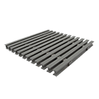

Pultruded Grating
Harrington is a premier supplier of high-quality pultruded grating, offering a diverse selection of style options, materials, specifications, and more. Pultruded grating is used for floor systems, walkways, and other outdoor applications. Browse our product range to request a quote, obtain additional information, and explore purchasing options.
 per EA · Sign in for price
per EA · Sign in for price- Pultruded FRP Grating, (VFR) Vinyl Ester Fire Retardant, Economy T-Bar, 4' x 10' Panel, 50% Open Area, 6" Spacing, 1-1/2" Panel Thickness, Yellow, Medium Grit, Slottedper EA · Sign in for price

Pultruded FRP Grating, (IPE) Isophthalic Polyester Non-Flame Retardant, I-Bar, 3' x 10' Panel, 40% Open Area, 6" Spacing, 1" Panel Thickness, White, Medium Gritper EA · Sign in for price- Pultruded FRP Grating, (IFR) Isophthalic Polyester Fire Retardant, I-Bar, 5' x 8' Panel, 60% Open Area, 6" Spacing, 1" Panel Thickness, Gray, Medium Gritper EA · Sign in for price
- Pultruded FRP Grating, (IFR) Isophthalic Polyester Fire Retardant, I-Bar, 5' x 12' Panel, 60% Open Area, 6" Spacing, 1" Panel Thickness, Gray, Medium Gritper EA · Sign in for price
- Pultruded FRP Grating, (IFR) Isophthalic Polyester Fire Retardant, I-Bar, 3' x 8' Panel, 60% Open Area, 6" Spacing, 1" Panel Thickness, Yellow, Medium Gritper EA · Sign in for price
- Pultruded FRP Grating, (IFR) Isophthalic Polyester Fire Retardant, I-Bar, 3' x 10' Panel, 60% Open Area, 6" Spacing, 1" Panel Thickness, Yellow, Medium Gritper EA · Sign in for price
- Pultruded FRP Grating, (IFR) Isophthalic Polyester Fire Retardant, I-Bar, 3' x 12' Panel, 60% Open Area, 6" Spacing, 1" Panel Thickness, Yellow, Medium Gritper EA · Sign in for price
- Pultruded FRP Grating, (IFR) Isophthalic Polyester Fire Retardant, I-Bar, 3' x 20' Panel, 60% Open Area, 6" Spacing, 1" Panel Thickness, Yellow, Medium Gritper EA · Sign in for price
- Pultruded FRP Grating, (IFR) Isophthalic Polyester Fire Retardant, I-Bar, 4' x 8' Panel, 60% Open Area, 6" Spacing, 1" Panel Thickness, Yellow, Medium Gritper EA · Sign in for price
- Pultruded FRP Grating, (IFR) Isophthalic Polyester Fire Retardant, I-Bar, 4' x 10' Panel, 60% Open Area, 6" Spacing, 1" Panel Thickness, Yellow, Medium Gritper EA · Sign in for price
- Pultruded FRP Grating, (IFR) Isophthalic Polyester Fire Retardant, I-Bar, 4' x 12' Panel, 60% Open Area, 6" Spacing, 1" Panel Thickness, Yellow, Medium Gritper EA · Sign in for price
- Pultruded FRP Grating, (IFR) Isophthalic Polyester Fire Retardant, I-Bar, 4' x 20' Panel, 60% Open Area, 6" Spacing, 1" Panel Thickness, Yellow, Medium Gritper EA · Sign in for price
- Pultruded FRP Grating, (IFR) Isophthalic Polyester Fire Retardant, I-Bar, 5' x 8' Panel, 60% Open Area, 6" Spacing, 1" Panel Thickness, Yellow, Medium Gritper EA · Sign in for price
- Pultruded FRP Grating, (IFR) Isophthalic Polyester Fire Retardant, I-Bar, 5' x 10' Panel, 60% Open Area, 6" Spacing, 1" Panel Thickness, Yellow, Medium Gritper EA · Sign in for price
- Pultruded FRP Grating, (VFR) Vinyl Ester Fire Retardant, I-Bar, 3' x 12' Panel, 60% Open Area, 6" Spacing, 1" Panel Thickness, Gray, Medium Gritper EA · Sign in for price
- Pultruded FRP Grating, (VFR) Vinyl Ester Fire Retardant, I-Bar, 3' x 20' Panel, 60% Open Area, 6" Spacing, 1" Panel Thickness, Gray, Medium Gritper EA · Sign in for price
- Pultruded FRP Grating, (VFR) Vinyl Ester Fire Retardant, I-Bar, 4' x 10' Panel, 60% Open Area, 6" Spacing, 1" Panel Thickness, Gray, Medium Gritper EA · Sign in for price
- Pultruded FRP Grating, (VFR) Vinyl Ester Fire Retardant, I-Bar, 3' x 8' Panel, 60% Open Area, 6" Spacing, 1" Panel Thickness, Yellow, Medium Gritper EA · Sign in for price
- Pultruded FRP Grating, (VFR) Vinyl Ester Fire Retardant, I-Bar, 3' x 10' Panel, 60% Open Area, 6" Spacing, 1" Panel Thickness, Yellow, Medium Gritper EA · Sign in for price
- Pultruded FRP Grating, (VFR) Vinyl Ester Fire Retardant, I-Bar, 3' x 12' Panel, 60% Open Area, 6" Spacing, 1" Panel Thickness, Yellow, Medium Gritper EA · Sign in for price
- Pultruded FRP Grating, (VFR) Vinyl Ester Fire Retardant, I-Bar, 3' x 20' Panel, 60% Open Area, 6" Spacing, 1" Panel Thickness, Yellow, Medium Gritper EA · Sign in for price
- Pultruded FRP Grating, (VFR) Vinyl Ester Fire Retardant, I-Bar, 4' x 8' Panel, 60% Open Area, 6" Spacing, 1" Panel Thickness, Yellow, Medium Gritper EA · Sign in for price
- Pultruded FRP Grating, (VFR) Vinyl Ester Fire Retardant, I-Bar, 4' x 10' Panel, 60% Open Area, 6" Spacing, 1" Panel Thickness, Yellow, Medium Gritper EA · Sign in for price
- Pultruded FRP Grating, (VFR) Vinyl Ester Fire Retardant, I-Bar, 4' x 12' Panel, 60% Open Area, 6" Spacing, 1" Panel Thickness, Yellow, Medium Gritper EA · Sign in for price
- Pultruded FRP Grating, (VFR) Vinyl Ester Fire Retardant, I-Bar, 4' x 20' Panel, 60% Open Area, 6" Spacing, 1" Panel Thickness, Yellow, Medium Gritper EA · Sign in for price
- Pultruded FRP Grating, (VFR) Vinyl Ester Fire Retardant, I-Bar, 5' x 8' Panel, 60% Open Area, 6" Spacing, 1" Panel Thickness, Yellow, Medium Gritper EA · Sign in for price
- Pultruded FRP Grating, (VFR) Vinyl Ester Fire Retardant, I-Bar, 5' x 10' Panel, 60% Open Area, 6" Spacing, 1" Panel Thickness, Yellow, Medium Gritper EA · Sign in for price
- Pultruded FRP Grating, (VFR) Vinyl Ester Fire Retardant, I-Bar, 5' x 12' Panel, 60% Open Area, 6" Spacing, 1" Panel Thickness, Yellow, Medium Gritper EA · Sign in for price
- Pultruded FRP Grating, (VFR) Vinyl Ester Fire Retardant, I-Bar, 5' x 20' Panel, 60% Open Area, 6" Spacing, 1" Panel Thickness, Yellow, Medium Gritper EA · Sign in for price
- Pultruded FRP Grating, (IFR) Isophthalic Polyester Fire Retardant, I-Bar, 30" x 113.75" Panel, 60% Open Area, 6" Spacing, 1-1/2" Panel Thickness, Gray, Medium Gritper EA · Sign in for price
- Pultruded FRP Grating, (IFR) Isophthalic Polyester Fire Retardant, I-Bar, 5' x 8' Panel, 60% Open Area, 6" Spacing, 1-1/2" Panel Thickness, Gray, Medium Gritper EA · Sign in for price
- Pultruded FRP Grating, (IFR) Isophthalic Polyester Fire Retardant, I-Bar, 5' x 10' Panel, 60% Open Area, 6" Spacing, 1-1/2" Panel Thickness, Gray, Medium Gritper EA · Sign in for price
- Pultruded FRP Grating, (IFR) Isophthalic Polyester Fire Retardant, I-Bar, 5' x 20' Panel, 60% Open Area, 6" Spacing, 1-1/2" Panel Thickness, Gray, Medium Gritper EA · Sign in for price
- Pultruded FRP Grating, (IFR) Isophthalic Polyester Fire Retardant, I-Bar, 3' x 8' Panel, 60% Open Area, 6" Spacing, 1-1/2" Panel Thickness, Yellow, Medium Gritper EA · Sign in for price
- Pultruded FRP Grating, (IFR) Isophthalic Polyester Fire Retardant, I-Bar, 3' x 10' Panel, 60% Open Area, 6" Spacing, 1-1/2" Panel Thickness, Yellow, Medium Gritper EA · Sign in for price
- Pultruded FRP Grating, (IFR) Isophthalic Polyester Fire Retardant, I-Bar, 3' x 12' Panel, 60% Open Area, 6" Spacing, 1-1/2" Panel Thickness, Yellow, Medium Gritper EA · Sign in for price
- Pultruded FRP Grating, (IFR) Isophthalic Polyester Fire Retardant, I-Bar, 3' x 20' Panel, 60% Open Area, 6" Spacing, 1-1/2" Panel Thickness, Yellow, Medium Gritper EA · Sign in for price
- Pultruded FRP Grating, (IFR) Isophthalic Polyester Fire Retardant, I-Bar, 4' x 8' Panel, 60% Open Area, 6" Spacing, 1-1/2" Panel Thickness, Yellow, Medium Gritper EA · Sign in for price
- Pultruded FRP Grating, (IFR) Isophthalic Polyester Fire Retardant, I-Bar, 4' x 10' Panel, 60% Open Area, 6" Spacing, 1-1/2" Panel Thickness, Yellow, Medium Gritper EA · Sign in for price